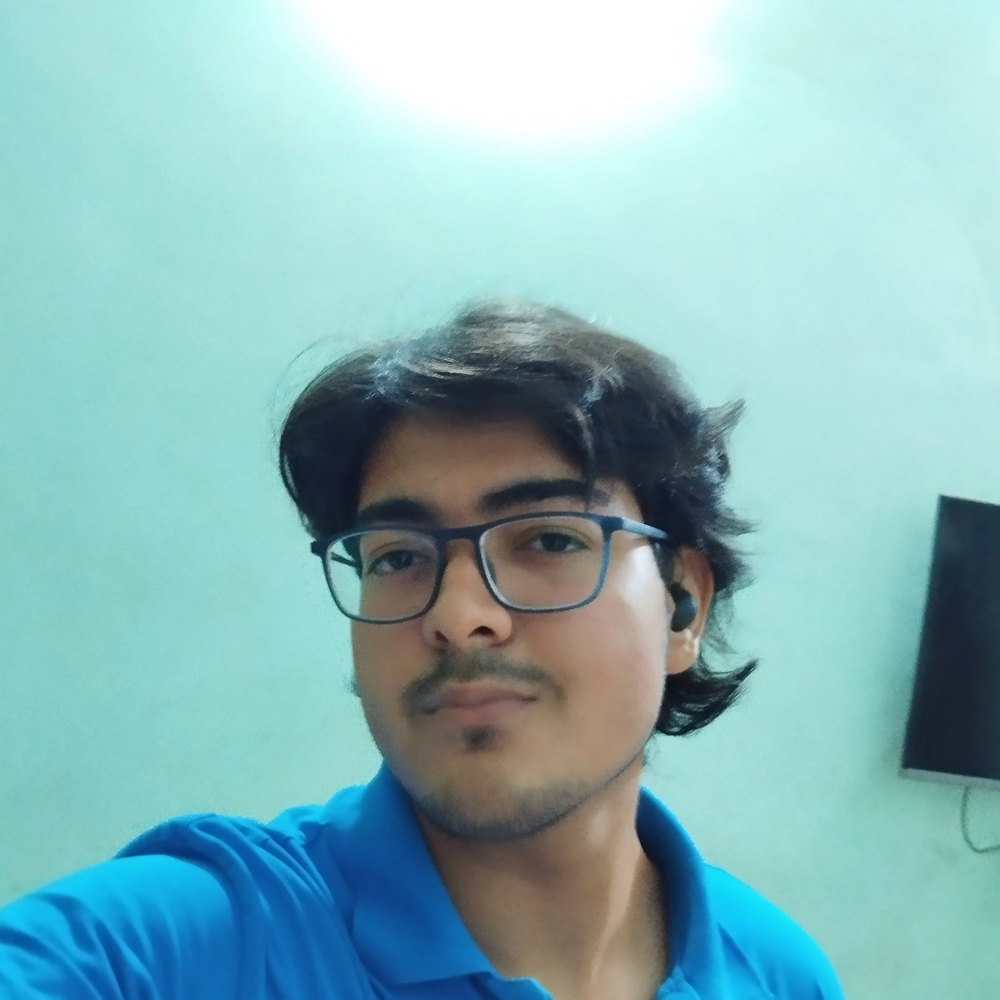

I am passionate engineering student, with building skills in full-stack development, data structure and algorithms. Actively looking for learning opportunities. I also love to explore technolgy in general, and new effiecient solutions built around the world.I am constantly expanding my skills with latest advancement in field of software development.